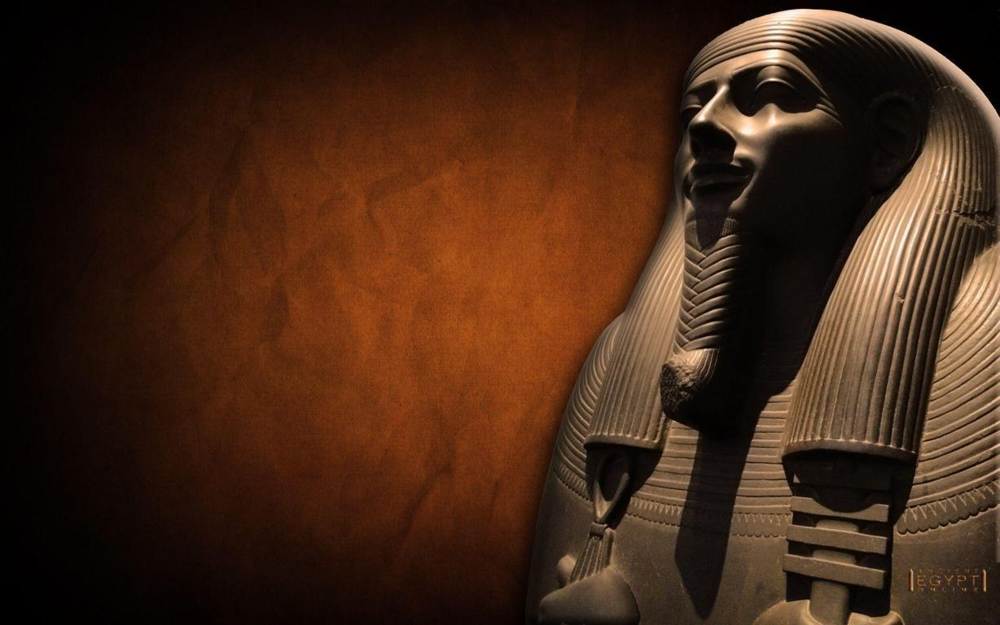
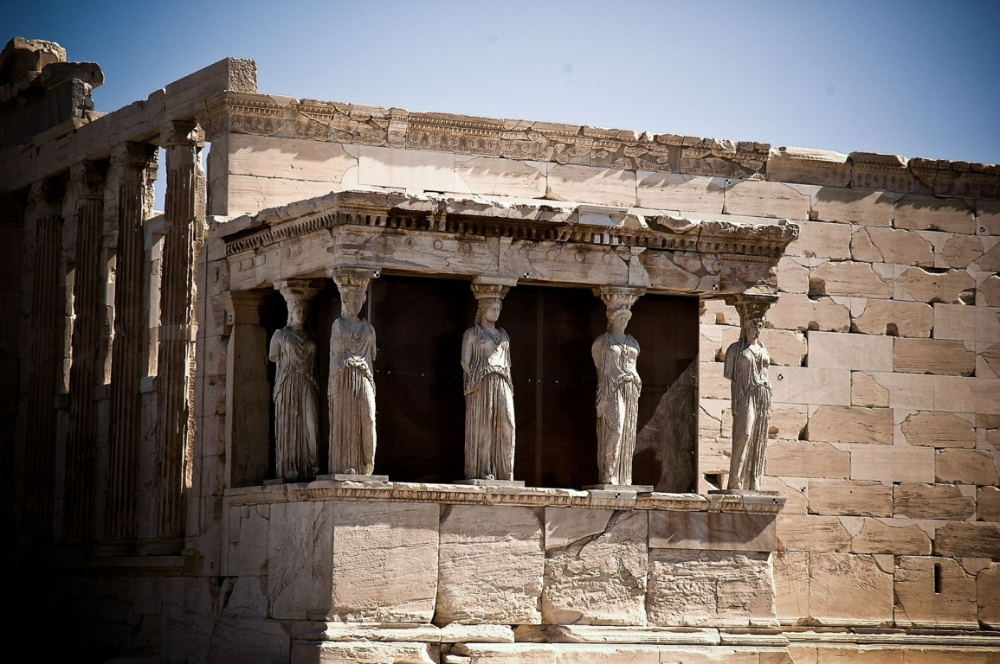
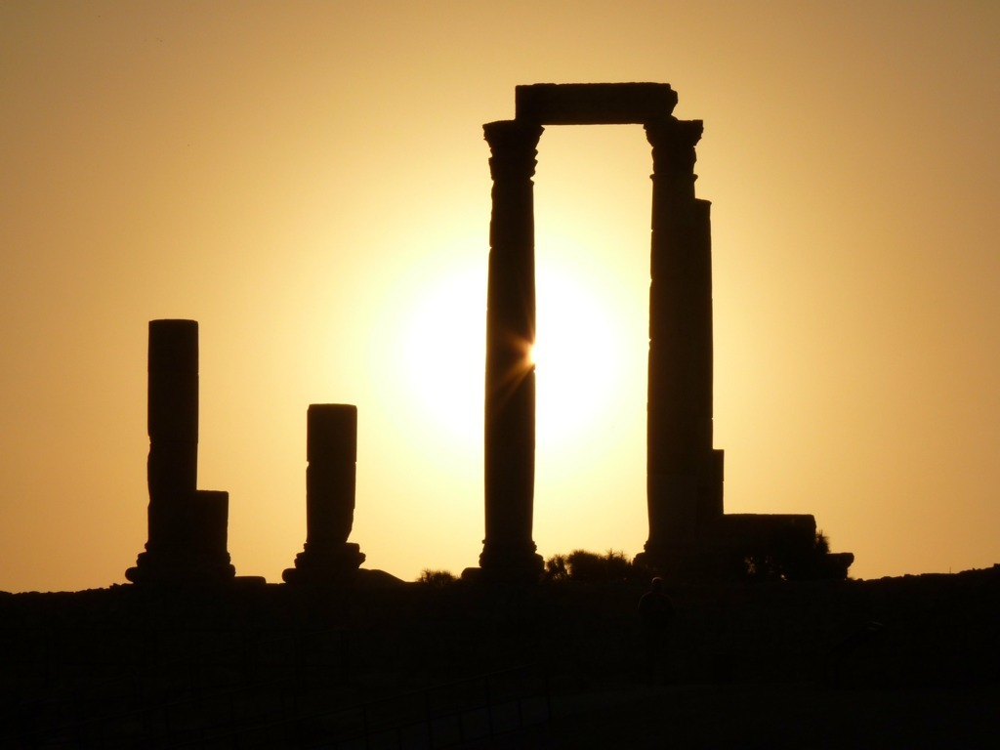
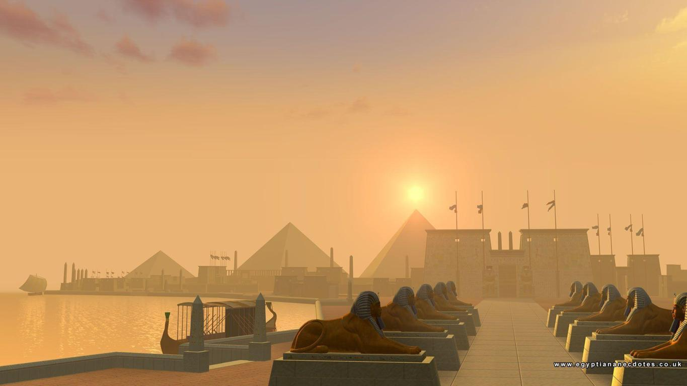
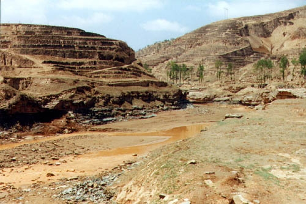
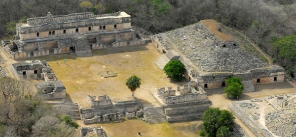

The Ancient Civilization
☰ Menu

Welcome
to the World
of Lost Cities

Welcome
to the World
of Lost Cities

Welcome
to the World
of Lost Cities

Welcome
to the World
of Lost Cities
History of Ancient Civilizations:
In the course of human evolution, at a certain point in time, the idea of living in a group with mutual understanding and dependency became a very useful and practical lifestyle. From such small isolated groups, communities were formed. Then came the societies which in due time became a civilization. How the human mentality and psychology led to this huge change is still a popular topic among the historiansand anthropologist, and a major discussion for another day. For now, let’s talk about some of the oldest civilization7s to have ever existed in the world.
The Incas
In the course of human evolution, at a certain point in time, the idea of living in a group with mutual understanding and dependency became a very useful and practical lifestyle. From such small isolated groups, communities were formed. Then came the societies which in due time became a civilization. How the human mentality and psychology led to this huge change is still a popular topic among the historians and anthropologist, and a major discussion for another day. For now, let’s talk about some of the oldest civilization7s to have ever existed in the world.
The Incas was the largest Empire in South America in the Pre-Columbian era. This civilization flourished in the areas of present day Ecuador, Peru and Chile and had its administrative, military and political center located at Cusco which lies in modern day Peru. The Incas had their societies pretty well established, and the empire was in a rapid bloom since it’s beginning.
The Incas were devout followers of the Sun God Inti. They had a king who was referred to as “Sapa Inca” meaning the child of the child of the Sun.
The first Inca emperor Pachacuti transformed it from a modest village to a great city laid out in the shape of a puma. He went to expand the tradition of ancestor worship. When the king died, his son would get all the power, but all his wealth would be distributed among his other relatives, who would in return preserve his mummy and sustain his political influence. This significantly led to a sudden rise in power of the Incas. The Incas went on to become great builders and went on to build fortresses and sites like Machu Picchu and the city of Cusco that still stand to this day.
The Aztecs Civilization
The Aztecs came upon the scene pretty much around the time when the Incas were appearing as the powerfulcontenders in South America. Around the 1200s and early 1300s, the people in present day Mexico used to live in three big rival cities – Tenochtitlan, Texcoco and Tlacopan. Around 1325, these rivals created.
The Roman Civilization
The Roman Civilization came into the picture around the 6th century BC. Even the story behind the foundation of the ancient Rome is something of a legend, it’s full of myths. But at the height of its power, the Romans ruled over the biggest chunk of land in that era – all the present day counties surrounding the modern day.
The Persian civilization
There was a time when the ancient Persian civilization was, in fact, the most powerful empire in the world. Though only in power for a little over 200 years, the Persians conquered lands that covered over 2 million square miles. From the southern portions of Egypt to parts of Greece and then east to parts of India, the Persian Empire was known for its military strength and wise rulers. Now before you even start to contemplate the fact that they created such a vast empire just within a period of 200 years, before 550 BC, Persian (or Persis as it was called back then) used to be divided into factions among a number of leaders.
Chinese Civilization
Ancient China – also known as Han China, comes in at number 5 and has doubtlessly one of the most diverse histories. In fact, if you consider all the dynasties from the very first to the very last that ever ruled in China, you get a significantly huge period of time that needs to be covered concisely. The Yellow river civilization is said to be the cradle of the entire Chinese civilization as this is where the earliest dynasties were based. It was around 2700 BC that the legendary Yellow Emperor began his rule, a point in time that later led to the birth of many dynasties that went on to rule mainland China.
In 2070 BC, the Xia dynasty became the first to rule the entire China as described in ancient historical chronicles. From then on, there came a number of dynasties that held control over China in different periods of time until the end of Qing dynasty in 1912 AD with the Xinhai revolution.


Mayan Civilization
The ancient Mayan civilization flourished in Central America from about 2600 BC and has been much talked about in recent times because of the timeline of the calendar they had created. Once the civilization was established, it went on to prosper and become one of the most sophisticated civilizations with a booming population of about 19 million at its peak. By 700 BC, the Mayans had already devised their own way of writing which they used to create their own solar calendars carved in stone. According to them, the world was created on August 11, 3114 BC, which is the date from which their calendar counts. And the supposed end was on December 21, 2012.
The ancient Mayans were culturally richer when compared to many of the contemporary civilizations. The Mayans and Aztecs both built pyramids, many of which are larger than those in Egypt.But their sudden decline and an abrupt end had long been one of ancient history’s most intriguing mysteries: Why did the Maya, a remarkably sophisticated civilization made up of more than 19 million people, suddenly collapse sometime during the 8th or 9th centuries? Although the Mayan people never entirely disappeared—their descendants still live across Central America.